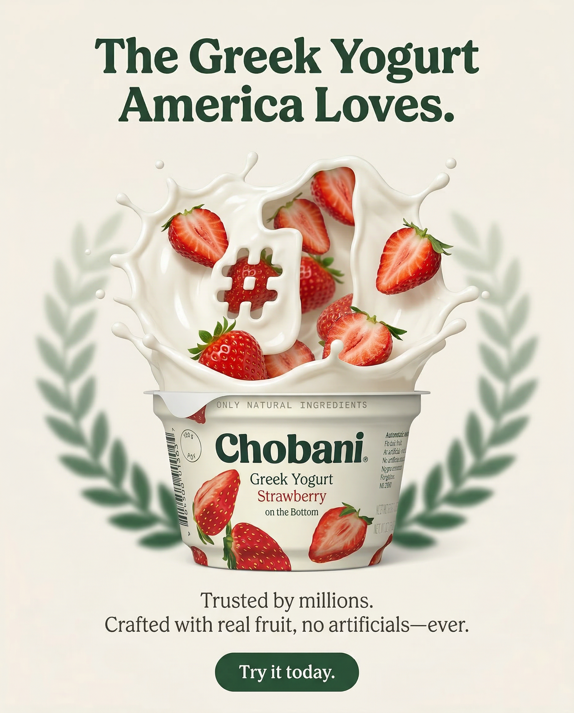

A static ad is a single image, so it costs less to make and change than a video, and a new angle only needs a new layout. Whether that image sells or gets scrolled past usually comes down to a handful of design and messaging decisions. They apply the same way whether a designer, an AI tool or both made the ad.
Use the 10 principles below as a checklist whether you design static ads for Meta in-house or review an agency's work.
Lead with the hook, not the logo
The headline does most of the work. Meta's own research found that people spend 1.7 seconds on average with a piece of mobile feed content (Facebook IQ, 2016). That is not enough time to process a logo, parse a tagline and then find the value proposition buried in the subtext, so the hook has to be the first thing the eye hits.
A hook is a benefit-driven statement that speaks directly to the viewer's desire or problem. "Jeans that don't bag out by lunch" is a hook. "Premium denim solutions" is not. The strongest static ads make the hook the largest, most prominent element on the creative, sometimes larger than the product image itself.
Your logo still belongs on the ad, as a secondary element: a corner placement, a small size. The logo builds recognition over repeated impressions, and the hook is what earns those impressions in the first place.
One message per creative
The most common mistake in static ad design is trying to say too much. When a single creative carries the product's features, its price, a limited-time offer, a customer review and a call to action, the result is visual noise that people skip.
Give each creative one benefit, one proof point and one call to action. If you have five selling points, you need five creatives, not one cluttered image trying to do the work of five.
One message per creative also makes tests easier to read. When each ad carries a single angle, you can see which message worked and make more of it.
Product first
The product should be the visual anchor of the ad. Many brands bury it behind lifestyle imagery, overlapping text or decorative elements. If someone can't tell what you are selling at first glance, the ad has failed.
Show the product clearly, at a generous size, with good lighting or rendering. For physical products, that often means a clean pack shot or a scene where the product sits front and center. For digital products or services, show the interface, the result or a tangible version of the outcome.
Our Chobani spec concepts (spec work, not commissioned by Chobani) put the yogurt cup at the center of every frame and arrange the headline and the CTA around it.
Contrast creates attention
Facebook and Instagram feeds are visually busy. Your ad sits between friends' photos, memes, news and other ads, and the ads that get noticed create visual contrast against all of it.
Contrast means background colors that stand out from the app's white and gray interface. It means text that is readable at a glance, not thin gray type on a pastel background. It means deliberate color blocking, borders or shapes that separate the ad from the posts around it.
A practical test: shrink your ad to the size of a postage stamp. If you can't still read the headline, the contrast is not strong enough for the feed.
Social proof sells
People look for evidence that others bought and liked a product before they buy it. On a static ad, that evidence has to be short enough to read at a glance and specific enough to believe.
Useful formats include a star rating with its review count, a one-line review quote from a real customer, a best-seller badge you can document, press logos and a units-sold figure. Specific proof reads as more credible than a vague claim: "Rated 4.8 by 2,300 customers" says more than "Customers love us", provided the numbers are real. The FTC's advertising guide for small businesses says advertisers must have evidence to back up their claims.
Place social proof near the product or near the CTA, where it answers a doubt at the moment someone decides.
Text hierarchy matters
Every static ad should have three levels of text, no more. The headline is the largest and boldest element, the piece that stops the scroll. The supporting text adds one detail: a proof point, a clarified benefit or an offer. The CTA tells the viewer what to do next.
When all the text is the same size and weight, the eye has no entry point. With four or five levels, the hierarchy collapses and the ad reads like a flyer. Three levels give a natural reading order: hook, support, action.
A starting point: set the headline at about three times the size of the supporting text, and the supporting text a little larger than the CTA. Then adjust by eye at phone size.
Design for mobile first
Design and approve every static at phone size. A layout that reads well on a 27-inch monitor can fall apart on a 6-inch screen, and a headline you have to pinch and zoom to read is too small.
Mobile-first design means larger text than feels comfortable on a desktop, layouts cut down to the essentials, and a review of the creative at real phone size before anyone signs it off.
It also means working in Meta's recommended shapes. Meta recommends 4:5 at 1440 x 1800 pixels for Facebook and Instagram feeds and 9:16 at 1440 x 2560 pixels for Stories and Reels (Meta Ads Guide, checked September 2026). At the same width, a 4:5 image takes up more of a phone screen than a square or landscape one.
Use whitespace strategically
Empty space tells the eye where to go. An ad with every pixel filled with text, badges and decoration gives the viewer nowhere to start, and it rarely looks premium.
Whitespace does three jobs. It separates the elements that matter, it gives text room to be read, and it signals quality. Put a luxury brand's advertising next to a discount retailer's circular and much of the difference is empty space.
A quick test: if you can't point to the empty space on the ad, there isn't enough of it.
The CTA should be obvious
Every static ad needs a clear call to action that looks like something the viewer can tap: a button shape with rounded corners, a contrasting fill and action words such as "Shop Now", "Try It Free" or "Get 20% Off" when that offer exists.
Place the CTA where the reading order ends, usually below the product, and set it apart with a different color, a border or a fill. In Stories and Reels, keep it above the bottom 35% of the image, which Meta suggests leaving clear of text and logos.
Use urgency honestly. Put "Limited time" or "Only X left" on an ad only when it is true, because false urgency teaches your audience to ignore the next deadline you set.
Test the angle, not the design
Most brands spend their testing budget on design details: a different background color, a slightly different font, a new crop. Those tests are optimizations, and they tend to produce small differences.
The bigger differences come from the concept. A concept, or angle, is the core message of the ad. "This product saves you time" is one angle. "Dermatologists recommend this product" is another. "This replaced three products in my routine" is a third. They are different creative ideas, and they get different results.
Test angles first, find the message that lands, and then refine the design. A polished creative can't rescue the wrong message. Our ad creative testing framework sets out how to structure those tests and when to call a winner.
Score your static ad: the 10-point check
Run every static through this before it goes live. Look at it on a phone, at real size, for two seconds, then answer each line yes or no. One "no" is a fix. Three or more means the concept needs a rebuild, and a new layout won't save it.
| Principle | Passes if | Fails if |
|---|---|---|
| 01 Hook first | The headline is the first thing you read and names a benefit or a problem | The logo or a tagline is the biggest element |
| 02 One message | You can say what the ad claims in one short sentence | It carries a feature list, a price, an offer and a review at once |
| 03 Product first | A stranger can name the product in under two seconds | The product is small, cropped or hidden behind type |
| 04 Contrast | The headline still reads at postage-stamp size | Thin or gray type sits on a pale background |
| 05 Proof | The proof is specific and you can document it | "Customers love us", or a number you can't back up |
| 06 Hierarchy | Three text levels: headline, one support line, CTA | Four or more sizes, or everything the same size |
| 07 Mobile first | Built at 4:5 or 9:16 and approved on a phone | Approved on a desktop monitor only |
| 08 Whitespace | You can point to the empty space | Every corner holds a badge, a burst or a line of copy |
| 09 CTA | One button-like CTA where the reading order ends, clear of the Stories bottom 35% | No CTA, two CTAs, or a CTA under the Stories interface |
| 10 Angle | The ad tests a message you haven't tested yet | It is last week's ad in a new color |
The check tells you whether an ad is ready to test. It can't tell you whether it will win, and only spend in your own account answers that. How many new statics you need each week to keep that testing going depends on budget and fatigue, which our guide to how many ad creatives you need works through.
What makes a static display advertisement effective?
An effective static display ad passes the same 10-point check, but on Google "display" covers two different ad types, and a static that works in one breaks in the other. Responsive display ads take your images, logos and text as separate assets, and Google assembles an ad to fit each slot. Uploaded image ads are finished banners you design at a fixed size, which is the closest thing on Google to a Meta static with the headline built into the image.
What is a static display advertisement?
A static display advertisement is a still image ad that Google shows in banner and native slots on websites, apps, YouTube and Gmail, rather than on the search results page. Nothing in it moves, plays or changes per viewer. Google says Display campaigns reach people across 35 million websites and apps, plus YouTube and Gmail (Google Ads Help, checked October 2026).
The word "static" matters because Google serves other kinds of ads in the same slots. Uploaded display ads can be images (GIF, JPG or PNG), HTML5 or AMPHTML, and HTML5 ads can be built to resize across slots, though Google notes they can't run in every part of the Display inventory (Google Ads Help, checked October 2026). Dynamic remarketing ads pull products from a feed you connect and show each visitor items they viewed on your site, and Google only promises that at least one product appears (Google Ads Help, checked October 2026). A responsive display ad built from your still images sits in between: the pictures are fixed, and Google decides the layout.
| Display ad type | What you hand Google | Who sets the layout |
|---|---|---|
| Uploaded image ad (static) | A finished JPG, PNG or GIF at one of Google's fixed sizes, 150KB or less | You |
| Responsive display ad | Up to 15 horizontal and 15 square images, a logo, headlines and descriptions | Google, slot by slot |
| HTML5 or AMPHTML ad | A zip file built in a tool such as Google Web Designer | You, with rules for resizing |
| Dynamic remarketing ad | A product feed, plus a responsive or custom template | Google, filled from your feed |
For a DTC brand already running Meta statics, the uploaded image ad is the cheapest place to start: the same hook, product cutout and colors, rebuilt at 300 x 250, 728 x 90 and 320 x 50. A store with a product catalog and enough site traffic to retarget can add dynamic remarketing next, where the work goes into clean product images in the feed rather than new layouts; our page on ecommerce ad creatives covers that catalog side. Responsive display ads come last because they need product images that sell with no text on them, which the next part explains.
Responsive display ads: the image sells alone
For a responsive display ad, Google asks for at least one horizontal 1.91:1 image (1200 x 628 pixels recommended, 600 x 314 minimum) and one square 1:1 image (600 x 600 recommended, 300 x 300 minimum), up to 15 of each, plus up to 5 headlines of 30 characters, one long headline of 90 characters and up to 5 descriptions of 90 characters (Google Ads Help, checked October 2026). Image assets can be JPG or PNG up to 5,120 KB (Google image asset requirements, checked October 2026).
Google's best-practices guide for responsive display ads says to avoid putting text on top of the image, because overlaid text can be unreadable in smaller ad sizes, and not to overlay a logo either. Text that is part of the photo, such as the words printed on a pack, is allowed (Google Ads Help, checked October 2026). That splits the 10 principles in two. The hook, the hierarchy and the CTA move out of the image and into the headline and description fields, where Google sets the type for you. The image has to carry product first, contrast and whitespace on its own.
A quick test: take the background plate of your Meta static before any text goes on, and crop it to 300 x 300. If a stranger can't tell what you sell from that crop, it won't work as a responsive display image. Write the 30-character headlines as five different angles rather than five rewordings of one, so Google has real options to rotate.
Uploaded image ads: your design, Google's sizes
Uploaded image ads keep the designed static intact. Google lists 20 standard sizes in four families: square and rectangle (such as 300 x 250 and 336 x 280), skyscraper (such as 160 x 600 and 300 x 600), leaderboard (such as 728 x 90 and 970 x 250) and mobile (300 x 50, 320 x 50 and 320 x 100). Files are GIF, JPG or PNG at 150KB or less, and an animated GIF has to stop within 30 seconds (Google Ads Help, checked October 2026).
The small sizes are where principle 06 gets tested hardest. A 320 x 50 mobile banner has room for a logo, a few words and a button, so the three text levels drop to two: hook and CTA. A 4:5 feed headline scaled down into a 50-pixel-tall strip is unreadable, so build leaderboard and mobile banners as their own layouts and reuse only the hook, the product cutout and the colors. The 150KB cap also rules out most photo-heavy PNGs, so export banners as compressed JPGs and check the type stays sharp after compression.
| Meta feed or Stories static | Google responsive display | Google uploaded image ad | |
|---|---|---|---|
| Text on the image | Expected; keep Stories text clear of the bottom 35% | Google advises against overlaid text and logos | Yes, designed into the banner |
| Sizes to make | 4:5 at 1440 x 1800 for feed, 9:16 at 1440 x 2560 for Stories and Reels | 1.91:1 at 1200 x 628 and 1:1 at 600 x 600, up to 15 of each | 20 fixed sizes, such as 300 x 250, 300 x 600, 728 x 90 and 320 x 50 |
| File limit | JPG or PNG up to 30MB | JPG or PNG up to 5,120 KB | GIF, JPG or PNG up to 150KB |
| Who writes the headline | You, on the image, plus primary text | You write up to 5; Google picks per slot | You, on the image |
| Principles that carry the most weight | 01 hook, 07 mobile first, 09 CTA | 03 product first, 04 contrast, 08 whitespace | 06 hierarchy, 04 contrast, 09 CTA |
Meta specs are from the Meta Ads Guide, checked September 2026. If you're still deciding whether a still image is the right format at all, our comparison of static vs video ads covers when each one fits.
How we apply these at 100 Creatives
100 Creatives is an AI-powered creative agency in Calgary, Canada, that makes static and video ads, and the product imagery behind them, for DTC and consumer brands advertising on Meta, TikTok and Google. These ten principles are the checklist we review static concepts against.
Engagements start with a brand intake covering visual language, model preferences, colorways and export specs. Creative batches turn around in 48 hours, and revisions come back within 48 hours. A static batch can include Google display sizes alongside Meta feed and Stories sizes. Static and video ad creative is quoted from $4,000, with a fixed total in writing before work starts, and our ad creative agency pricing guide compares that with other ways to buy statics.
The principles in spec concepts
Most of our client work is under NDA, so the examples below are spec work: concepts we made for brands that did not commission them. They show the principles applied to real products. None of them ran as ads, so they say nothing about results. Our DTC static ad examples page has all 25 concepts with notes on why each layout works.
